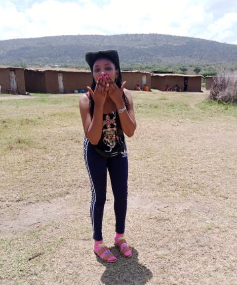

My name is Eddah Karambu, was born in Ruiri brought up in Limuru Kenya.I attended my lower primary school at Jossy Preparatory School,later on joined my upper primary at Grace primary school and that's where i cleared my class eight.Afterwards i joined Mirithu Girls High school did my form four there and eventually managed to join St Pauls University where i studied Youth Career and Mentorship progaram. After my stay at St Paul's University, i went to study Human Resource Management at kenya institute of Finance to date.I chose that career path because at that time i felt i was and am still able to actively engage with people,am also very approachable and get along with people quite well.Currently am at Moringa school stydying programming reason being i want to advance my skills in coding which are actually useful to most jobs.
In Moringa School i have done afew programing projects which are,
While still in school, i was able to get an intership at a flower farm called Tropiflora Limited where i got some Human resources skills.While i was still there i was able to work in the purchase dipartment
The tasks that i used to perform in the purchase department were,
later on after may stay at Tropiflora, i went and did wholesale and retail selling of phones.
I also have my own interests and hobies which are,
I love tarvelling, waking up to new horzons, making friends and seeing the wonderful view of nature.Though my best have always been dancing and listening to good music.This two are the blood to my veins coz here is where i feel most myself.